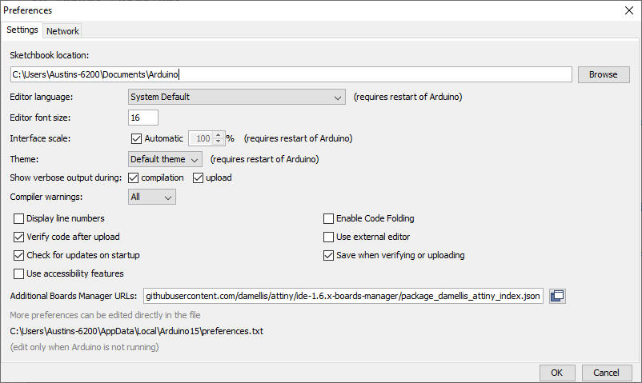
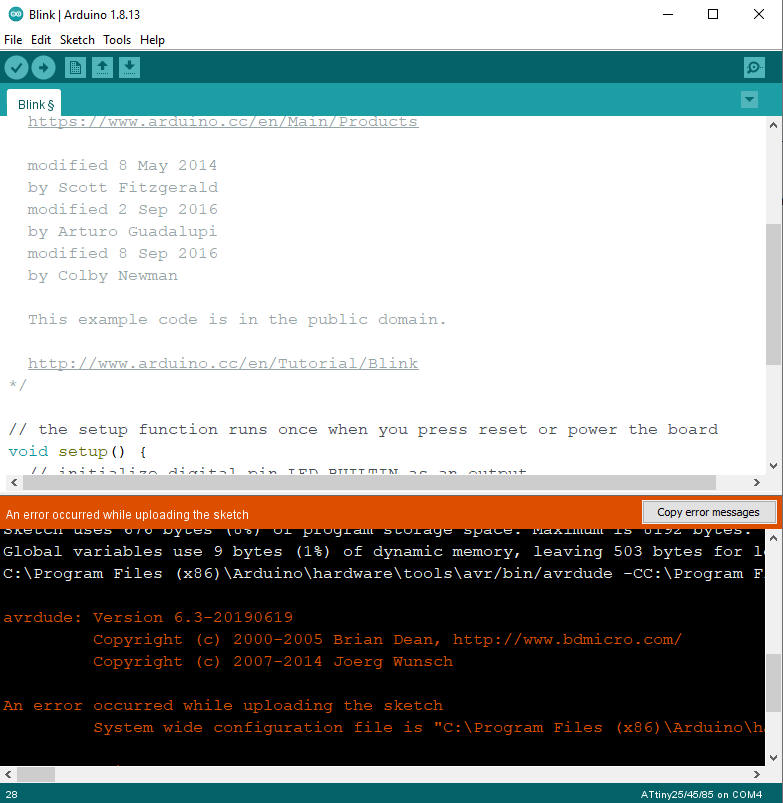

|
"the nineties called, they want their website design back!" |
Automated Attiny85 Programmer | |
|
Software
Projects Electronics Projects Hardware projects
|
I needed to program 50 attiny85's with the same program for a project and I wanted a simple way to burn the bootloader, set the fuses and program it with my code. so with help of the well documented AVRdude commands I made a program that automates the process. all you have to do is drop in the chip to a USBtiny programmer and hit enter! And boy is it fast! It takes just under 4 seconds to burn the bootloader, set the fuses, write to the chip and verify it! (tested with a 722b intel hex file) How to use the program Download it Here copy your pre compiled hex file into the folder in which the automation program is contained and rename it to program.hex Prerequisites
Compiling a Arduino Sketch into a hex file Open the Arduino IDE and go into preferences (File>Preferences) and select both show verbose whilst uploading and compilation, under that in the additional boards manager URLs box paste the following link  what your preferences window should look like (apart from the directory names at the top and bottom) This adds support for the Attiny85 to the Arduino IDE. you then need to go into the board's manager (Tools>Board>Boards manager) and in the search bar type attiny and only one option should show up, install that one. Next you need to select attiny 25/45/85 as the board, attiny85 as the processor and USBtinyISP as the programmer Then import your Arduino sketch press verfy and upload BUT dont connect the programmer to your computer it will compile the program to a hex and attempt to upload it but it will fail, this is what we want.  You then need to scroll up to where the red/orange text ends and the white text starts and you should have something along the lines of the following C:\Program Files (x86)\Arduino\hardware\tools\avr/bin/avrdude -CC:\Program Files (x86)\Arduino\hardware\tools\avr/etc/avrdude.conf -v -pattiny85 -cusbtiny -Uflash:w:C:\Users\AUSTIN~1\AppData\Local\Temp\arduino_build_738527/Blink.ino.hex:i we want the part that tells us the location of the hex file, In my case it is the highlighted part. You then need to go into file explorer and paste the location of the hex file we will then find the file and copy it to the folder in which the automation program is located. you then need to rename the file to program.hex. you can now connect the programmer and launch the program.
|